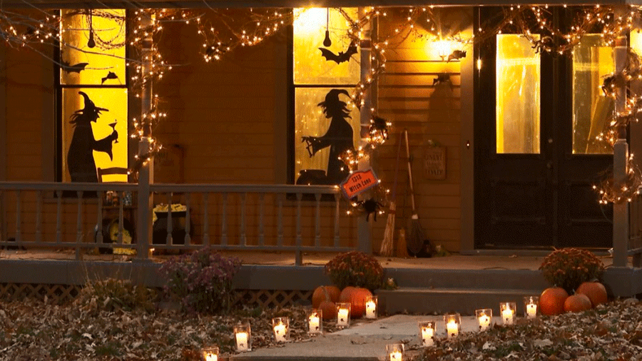
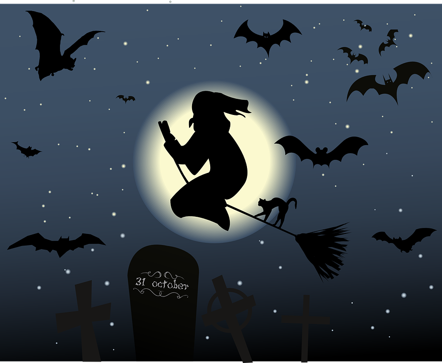

Ý NGHĨA CÁC BIỂU TƯỢNG TRONG LỄ HỘI HALLOWEEN
Halloween là lễ hội truyền thống được tổ chức vào ngày 31.10 hàng năm, là buổi tối áp lễ Các Thánh ngày 1 tháng 11, theo sau đó là lễ các Đẳng Linh hồn ngày 2 tháng 11. Ba ngày này được nhóm chung thành Tam nhật Các Thánh, khoảng thời gian trong năm dành để tưởng nhớ những người đã chết, gồm các vị thánh, các vị tử đạo, các tín hữu trung kiên đã qua đời và cầu nguyện cho những linh hồn chưa lên thiên đàng. Vào dịp này, mọi người thường sử dụng hình ảnh bí ngô, phù thủy, bộ xương, nhện, dơi…để trang trí nhà cửa. Vậy ý nghĩa của những biểu tượng này là gì, mọi người cùng Nam An khám phá nhé.
Dễ dàng nhận thấy, cam và đen là tông màu chủ đạo của lễ hội Halloween. Hai màu này chính là đại diện cho khoảng thời gian trong năm. Màu cam đại diện cho mùa thu khi những chiếc lá xanh ngả sang màu vàng cam và đó là thời điểm để thu hoạch bí ngô (quen thuộc trong lễ hội ma). Màu đen đại diện cho những ngày u ám xám xịt của mùa đông.
Củ cải vốn được sử dụng ở Ireland và Scotland vào dịp Halloween. Củ cải được khoét rỗng thành những chiếc đèn lồng hình mặt quỷ, bên trong cắm 1 cây nến như là một cách tưởng nhớ các linh hồn đang chịu tội. Người nhập cư Bắc Mỹ sử dụng bí ngô, thứ sẵn có và lớn hơn nhiều, giúp cho việc khắc trở nên dễ dàng hơn và khi thắp đèn họ thấy sáng hơn là thắp đèn bên trong củ cải. Truyền thống chạm khắc bí ngô của Mỹ (được ghi lại vào năm 1837) có liên quan tới thời gian thu hoạch nói chung, chỉ trở nên quen thuộc vào giữa đến cuối thế kỷ 19. Theo truyền thuyết của người Ailen thế kỷ 18, có một anh chàng nông dân nổi tiếng nghiện rượu có tư chất thông minh biệt hiệu là Jack Hà Tiện (Stingy Jack). Anh chàng đã nhiều lần lừa quỷ vương Satan (ông trùm của các loại quỷ dữ) và đưa ra điều kiện quỷ không được quấy nhiễu, trêu chọc cũng như không được thu linh hồn của hắn. Vì những trò lừa lọc ấy, khi chết, Jack lên thiên thường hay xuống địa ngục cũng không xong. Nhưng vì giữ lời hứa không bắt hồn Jack nên quỷ đuổi Jack đi nhưng tỏ ý thương hại nên cho Jack một cục than hồng để mà dò đường trong đêm tối. Jack Hà Tiện bỏ cục than cháy đỏ vào trong một củ khoai tây thối làm đèn và cứ luẩn quẩn khắp cõi dương gian và phong tục đặt những ngọn nến vào quả bí đỏ hay củ khoai tây trong ngày lễ Halloween… xuất phát từ đó. Vì Jack tinh ranh và láu cá nên người dân tin rằng linh hồn của Jack sẽ có thể tìm cách trở về nên mỗi khi mùa Halloween đến, họ khắc lên củ cải, quả bí ngô…hình mặt người láu cá và đem bày ở bệ cửa sổ hay cửa ra vào để xua đuổi những hồn ma vất vưởng như Jack Hà Tiện không xâm nhập vào nhà của họ.
Biểu tượng được làm từ vỏ ngô và cây lúa mì thường xuất hiện vào lễ hội ma Halloween, treo trên cửa hoặc đặt trên bàn ăn trong mỗi gia đình. Hình ảnh này đại diện cho vụ mùa thu hoạch và chuẩn bị cho vụ đầu đông ngay sau lễ hội mà không có ý nghĩa ma quái nào cả.
Khi nhắc đến nhện, người ta thường liên tưởng đến nơi nào đó tối tăm và bị bỏ hoang – điểm đến ưa thích trong mùa Halloween. Dơi là loài sống về đêm, vì thế, chúng xuất hiện trong hầu hết trong các bữa tiệc kỷ niệm việc ánh sáng kết thúc, nhường chỗ cho bóng đêm. Quan niệm xưa cho rằng, dơi là loài vật có thể giao tiếp với người chết. Ngoài ra, truyền thuyết về ma cà rồng thường biến thành dơi để xâm nhập vào những lễ hội, do đó, loài vật này trở nên quen thuộc với lễ hội ma.
Hình ảnh bộ xương, hộp sọ, theo truyền thống của Công giáo, có ý nghĩa như là một sự nhắc nhở về cái chết và tính không bền vững của đời người, từ đó, bộ xương, hộp sọ trở thành hình ảnh thường thấy trong lễ Halloween.
Có một số nền văn hóa cổ xưa tin rằng vào đêm Halloween, ranh giới giữa hai thế giới rất mỏng manh và linh hồn loài người được tái sinh trong thân xác loài mèo đen. Họ nói rằng mèo đen là vật nuôi của phù thủy. Trong những năm 1600, loài mèo được sử dụng để phát hiện ra phù thủy.
Trang phục phổ biến nhất cho các bé gái và thanh niên khoác lên mình trong đêm Halloween là bộ đồ phù thủy, đại diện cho nỗi sợ hãi và bóng đêm. Đặc biệt là trong đêm hội ma, sức mạnh và quyền năng của phù thủy sẽ mạnh nhất. Người ta cho rằng phù thủy liên minh với ma quỷ. Hình ảnh mụ phù thủy cưỡi chổi bay qua mặt trăng là một trong những biểu tượng truyền thống nhất của Halloween.
THÔNG TIN LIÊN HỆ
299/25 TDP Chợ,Đại Mỗ, Nam Từ Liêm, Hà Nội
Lê Tuấn Minh
0396080706
leminhtest@outlook.com.vn
Liên Kết
Halloween Nam
Halloween Nữ
Đồ chơi Halloween
Trang phục hóa trang
HỖ TRỢ